Start from a latent model
Use the pretrained latent generator and decoder initialization. Freeze the generator and image encoder.
Efficient Decoder Refinement via Inherited Generative Structure
1University of Toronto 2Vijil *Equal contribution
Latent Prior GANs (LP-GANs) start from a pretrained latent generative model, freeze its latent generator and image encoder, and adversarially refine its decoder on generation-time latents. Paired supervision anchors refinement to source images. The adapted decoder introduces no additional network at generation time.
A pretrained latent generative model already provides a learned latent distribution and a latent-to-image mapping. LP-GANs inherit this structure and focus adversarial learning on the decoder.
The decoder is typically trained on reconstruction latents but receives generated latents at deployment. We refine it on the generation-time distribution while keeping the latent prior fixed.
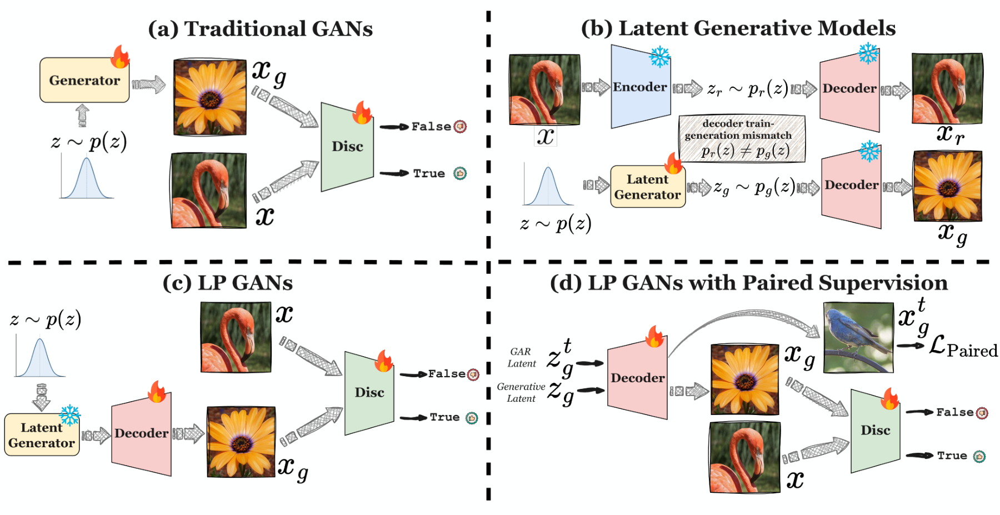
Five epochs of decoder refinement improve generation across the four tested iMF scales.
The decoder receives adversarial supervision on fully generated latents and paired supervision on image-corresponding latents. Both branches share the same decoder.
The latent generator and encoder remain fixed. Training updates the decoder and image-space discriminator; generation uses the refined decoder with the original sampler.
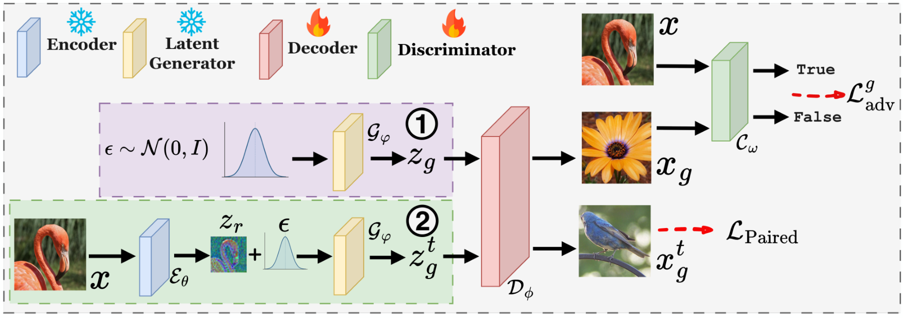
Use the pretrained latent generator and decoder initialization. Freeze the generator and image encoder.
Decode fully generated latents and apply an image-space adversarial objective.
Use image-corresponding latents for paired supervision (PS). Continuous priors provide a reconstruction-to-generation trajectory.
Replace the decoder with its refined weights. Discard the training discriminator; retain the original sampling procedure.
For TiTok, paired supervision uses encoded real-image tokens, while adversarial refinement uses tokens sampled from the frozen MaskGIT generator.
Class-conditional ImageNet 256 × 256. We compare the original decoder, LP-GANs without paired supervision, and full LP-GANs across B/2, M/2, L/2, and XL/2.
The official iMF protocol uses torch-fidelity and its reference statistics; the OpenAI protocol uses TensorFlow Inception and a different reference. All comparisons below are within the same protocol.
| Decoder setting | gFID w/o CFG ↓ | gFID w/ CFG ↓ | ||||||
|---|---|---|---|---|---|---|---|---|
| iMF-B/2 | iMF-M/2 | iMF-L/2 | iMF-XL/2 | iMF-B/2 | iMF-M/2 | iMF-L/2 | iMF-XL/2 | |
| Official iMF / torch-fidelity | ||||||||
| Original decoder | 16.58 | 11.92 | 9.28 | 9.78 | 3.37 | 2.27 | 1.86 | 1.73 |
| LP-GANs w/o PS | 19.43 | 15.58 | 11.92 | 11.96 | 2.55 | 2.07 | 1.78 | 1.69 |
| LP-GANs w/ PS | 13.39 | 11.20 | 8.49 | 8.51 | 2.08 | 1.73 | 1.48 | 1.32 |
| OpenAI | ||||||||
| Original decoder | 16.41 | 11.92 | 9.26 | 9.41 | 3.47 | 2.40 | 1.90 | 1.80 |
| LP-GANs w/o PS | 18.99 | 15.11 | 11.63 | 11.12 | 2.56 | 2.06 | 1.82 | 1.67 |
| LP-GANs w/ PS | 13.64 | 10.66 | 8.52 | 8.52 | 2.14 | 1.77 | 1.51 | 1.51 |
Results reported in the paper; lower gFID is better. Bold rows indicate the best results within each protocol. CFG column groups refer to evaluation-time guidance. PS denotes paired supervision.
Full LP-GANs improve guided and unguided gFID at every tested scale under both protocols. Under the official protocol, guided iMF-XL/2 gFID improves from 1.73 to 1.32.
Without PS, guided generation improves but unguided generation degrades across all four scales. Adding paired supervision improves both settings.
LP-GANs add adversarial refinement to an existing pretrained latent model. Five epochs cost 64–88 H100 GPU-hours across the four iMF scales.
| Model | Tokenizer (H100-h) | Latent generator (H100-h) | LP-GANs refinement (H100-h) |
|---|---|---|---|
| iMF-B/2 | 750 | 440 | 64 |
| iMF-M/2 | 750 | 860 | 66 |
| iMF-L/2 | 750 | 2,000 | 72 |
| iMF-XL/2 | 750 | 3,800 | 88 |
Reported H100 GPU-hour estimates. Tokenizer and latent-generator costs are FLOPs-based estimates; LP-GANs costs cover five epochs of decoder refinement and exclude pretraining. These are marginal refinement costs for an existing latent model.
Refining the iMF-XL/2 decoder takes about 88 H100 GPU-hours and reaches guided gFID 1.32 under the official protocol.
These figures describe the additional cost of refining an existing system. Obtaining its pretrained tokenizer and latent generator has a separate cost.
We study the role of paired supervision, the trajectory level used to construct paired latents, and which inherited component to update.
On iMF-B/2 under the OpenAI protocol, PS helps across trajectory levels η ∈ [0, 0.7], with the lowest guided gFID at η = 0.3. At high noise levels, source correspondence weakens and the paired objective loses its benefit.
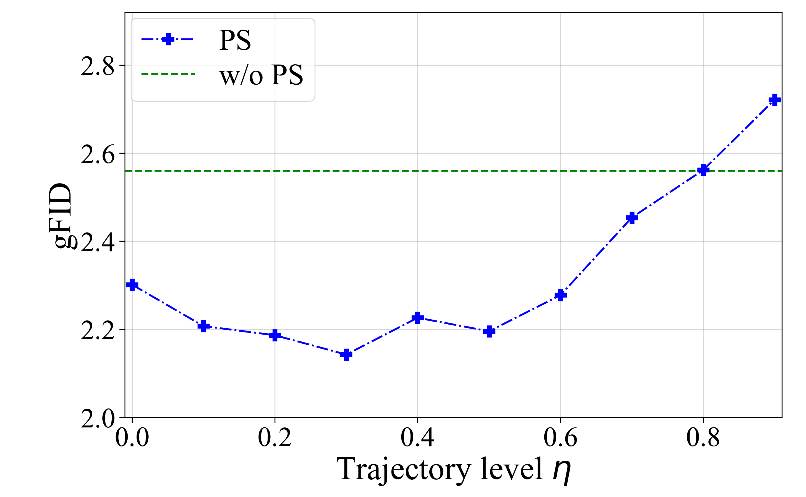
| Update scope | gFID w/ CFG ↓ | gFID w/o CFG ↓ | H100-h / epoch ↓ |
|---|---|---|---|
| Frozen | 3.47 | 16.41 | 0 |
| Decoder-only | 2.14 | 13.64 | 12.7 |
| Generator-only | 3.91 | 22.33 | 11.5 |
| Joint | 2.40 | 17.25 | 13.9 |
iMF-B/2, OpenAI protocol. The decoder-only setting gives the lowest gFID among the tested update scopes; generator-only refinement has the lowest nonzero per-epoch cost.
LP-GANs also improve MeanFlow, DMF, and TiTok-L32 under both protocols. The generator and sampling procedure remain unchanged.
| Latent generator | Evaluation protocol | Original decoder gFID ↓ | LP-GANs gFID ↓ |
|---|---|---|---|
| MeanFlow-XL/2 | Official iMF | 3.34 | 2.94 |
| MeanFlow-XL/2 | OpenAI | 3.49 | 2.98 |
| DMF-XL/2+ | Official iMF | 2.22 | 1.91 |
| DMF-XL/2+ | OpenAI | 2.40 | 1.95 |
| TiTok-L32 | Official iMF | 2.65 | 1.90 |
| TiTok-L32 | OpenAI | 2.81 | 1.98 |
ImageNet 256 × 256; lower gFID is better. Compare values within the same evaluation protocol. TiTok retains its eight-step MaskGIT sampler.
The same decoder-refinement principle applies to continuous flow-based priors and discrete token generators.
Selected generated samples from the paper. Each strip compares two decoder settings under the corresponding latent generator.
iMF-XL/2. Top: original decoder. Bottom: LP-GANs w/ PS.
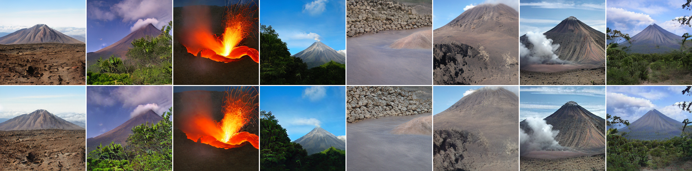
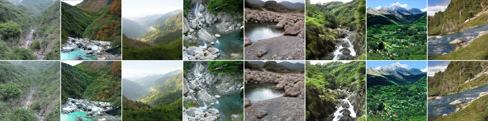
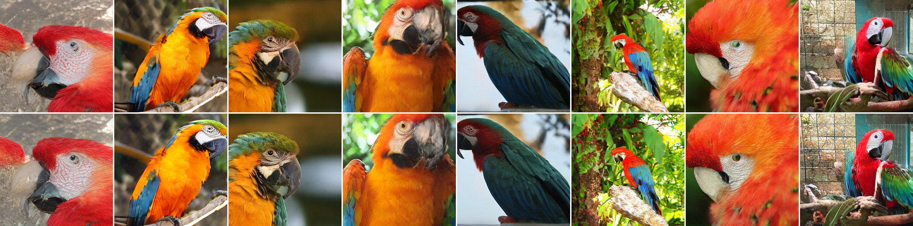
iMF-XL/2. Top: LP-GANs w/o PS. Bottom: LP-GANs w/ PS.
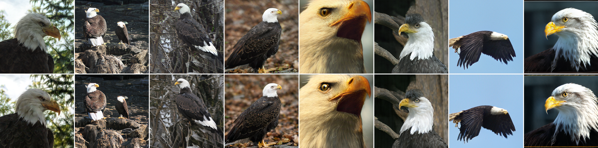
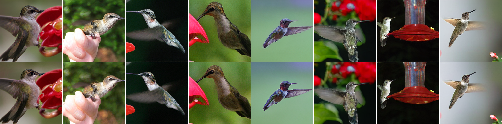
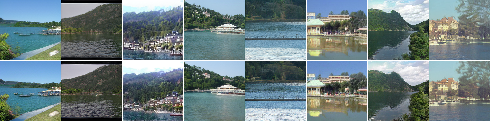
Eight selected classes per model. Top: original decoder. Bottom: LP-GANs.
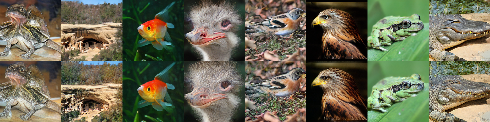
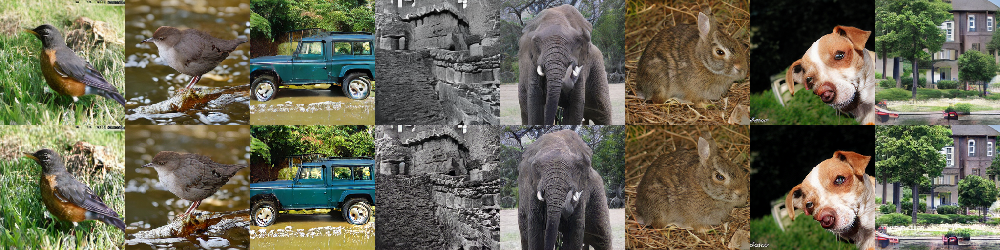
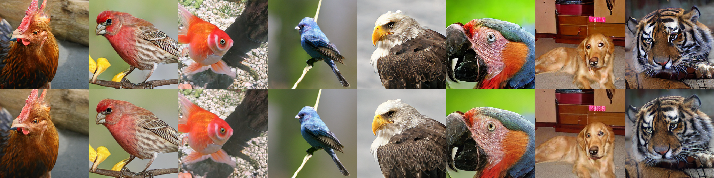
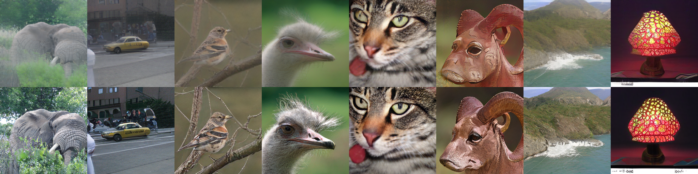
@article{shu2026latent,
title = {Latent Prior GANs: Efficient Decoder Refinement via Inherited Generative Structure},
author = {Shu, Wenjie and Fang, Xianghong and Kong, Dehan and Rudner, Tim G. J.},
journal = {arXiv},
year = {2026}
}